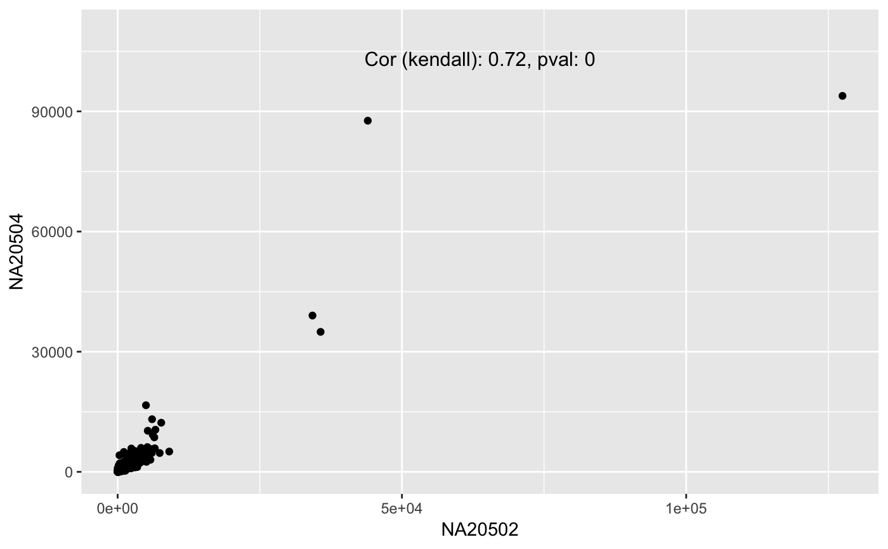

geom_cor.Rdgeom_cor will add the correlatin, method and p-value to the plot
automatically guessing the position if nothing else specidfied.
family font, size and colour can be used to change the format.
geom_cor(mapping = NULL, data = NULL, method = "spearman", xpos = NULL, ypos = NULL, inherit.aes = TRUE, ...)
| mapping | Set of aesthetic mappings created by |
|---|---|
| data | The data to be displayed in this layer. There are three options: If A A |
| method | Method to calculate the correlation. Values are
passed to |
| xpos | Locate text at that position on the x axis. |
| ypos | Locate text at that position on the y axis. |
| inherit.aes | If |
| ... | other arguments passed on to |
It was integrated after reading this tutorial to extend ggplot2 layers
data(humanGender) library(SummarizedExperiment) library(ggplot2) ggplot(as.data.frame(assay(humanGender)[1:1000,]), aes(x = NA20502, y = NA20504)) + geom_point() + ylim(0,1.1e5) + geom_cor(method = "kendall", ypos = 1e5)